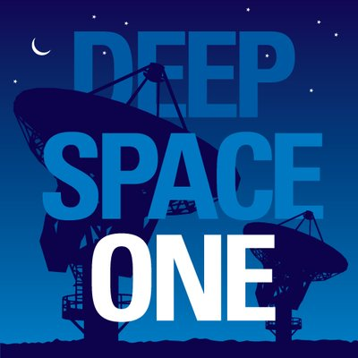

<div
 class="radio"
 mouseWheel
 (mouseWheelUp)="mouseWheelUpFunc(event)"
 (mouseWheelDown)="mouseWheelDownFunc(event)"
>

  <!-- <audio
    class="d-none"
    controls
    src="http://ice3.somafm.com/groovesalad-128-mp3">
        Your browser does not support the
        <code>audio</code> element.
  </audio> -->

  <!-- <ny-volume></ny-volume> -->

<!-- <ng5-slider [options]="options"></ng5-slider> -->
  <div class="volume-controls">
    <ng5-slider class="volume-slider" [formControl]="sliderControl" [options]="volumeControl.options"></ng5-slider>
  </div>

  <!-- TODO must transform this into a component -->
  <div class="playing">
    <section class="station-pic">
      
    </section>

    <section class="station-info">
      <header class="d-inline-block">Deep Space One</header>
      <p>Deep ambient electronic, experimental and space music. For inner and outer space exploration.</p>
    </section>
  </div>

  <footer class="now-playing text-center"><span>Enio Morhikhone - instagib</span></footer>

</div>
